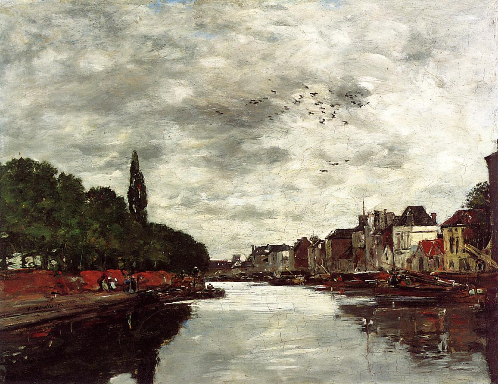
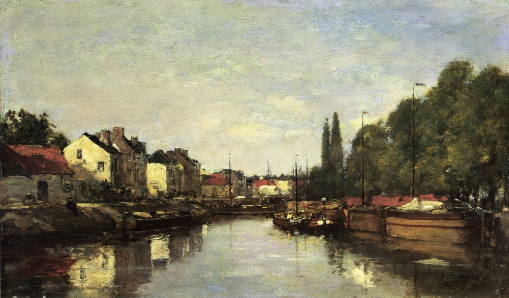

Krajobrazy Rilkego
Belgia
Brugia była niezrównanie piękna… Nasza mała dziewczynka wszędzie z nami chodziła. W muzeach rozsiadała się na posadzce i bawiła muszelkami zebranymi nad brzegiem morza…
Eugene Boudin „Canal near Brussels”, 1871
W sierpniu 1906 roku Rilke podróżuje po Belgii. W Furnes przygląda się dorocznej procesji, którą opisze później w swym studium Furnes. Wraz z Klarą i Ruth udaje się do Ypres, a następnie spędza dziesięć dni nad morzem w Oostduinkerke. Rilke odwiedza też Brugię. Wrażenia z pobytu w tym mieście znajdą wielorakie odzwierciedlenie w dziele poety; niezapomnianym przeżyciem jest widok Ołtarza św. Jana pędzla Hansa Memlinga z wizerunkiem piszącego oburącz Jana na Patmos. W Gandawie Rilke, Klara i Ruth przyglądają się procesji maryjnej.
Eugene Boudin „Brussels, the Louvain Canal”